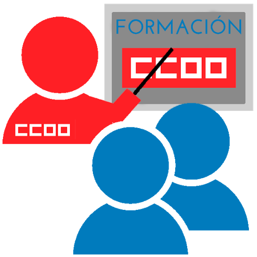

Sobre mi
Mi firme intención es desarrollar todos mis conocimientos y experiencia en el sector, así como la voluntad de aprender y formarme en todo lo necesario para convertirme en una gran profesional del diseño. Actualmente estoy cursando un Grado Superior de DAM para complementar mis estudios y ampliar mi formación.
Formación
Ins Castellet
Desarrollo de Aplicaciones Multimedia
Ins Esteve Terradas i Illa
Diseño Gráfico
Ins Aymerigues
Bachillerato Humanístico
IES Terrassa
Educación Secundaria Obligatoria
Experiencia Laboral
Decoración interior (Jardiland)
Sección de decoraión del hogar, creatividad y orden de la tienda, atención al cliente.
Dependienta (Primark)
Atención a caja y al cliente , orden y mantenimiento de tienda.
Heladeria (Jijonenca)
Atención al cliente, caja, elaboración de batidos y creps, servicio de cafetería, mantenimiento del local.
Diseño Gráfico (Saó Prat)
Diseño de flyers, carteles y tarjetas. Supervisión de trato de imágenes, textos y compaginación. Supervisión de gestión de color, comprovación previa de archivos (preflight) y selección de elementos gráficos y textuales en editorial. Elaboración de las fichas técnicas de producción de proyectos.
Dependienta (Inside)
Caja, atención al cliente, doblar y perfilar ropa.
Programas
Eclipse
Visual Code
Git hub
Oracle VM VirtualBox
Xampp
Odoo
Habilidades
Organización
Trabajo en equipo y de forma autónoma
Resolutiva
Buena Comunicadora
Aficiones y Intereses
Dibujo
Música
Deporte
Cine
Idiomas
Catalán(Nativo)
Castellano(Nativo)
Inglés(Intermedio)
Árabe(Básico)